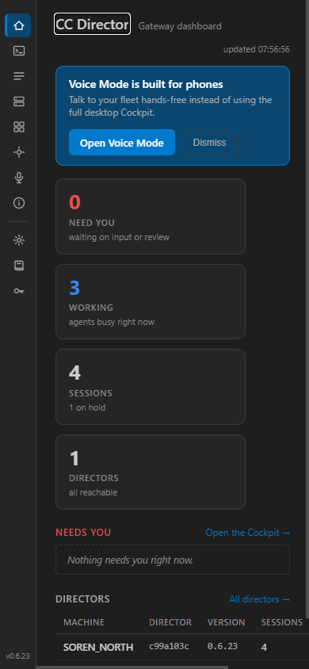
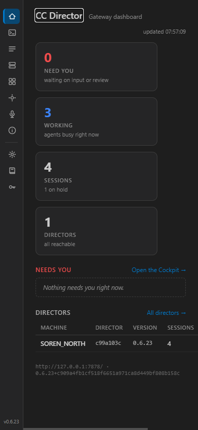
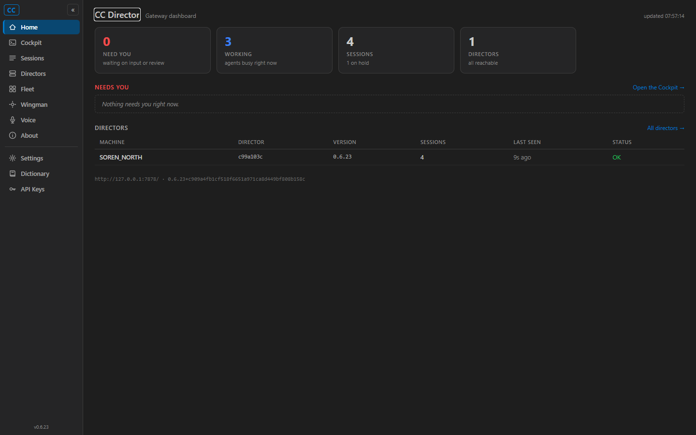

feat/427-voice-mobiledetect (PR base
feat/426-voice-offline2, Option A - not merged). Surface: CcDirector.Cockpit (web dashboard).On the Cockpit home, when the browser is a phone (mobile user-agent OR viewport width
≤ 720px) and the offer has not been dismissed, a prominent "Open Voice Mode" banner appears
that links to /voice. It is an offer, not a forced redirect (a
plain link with a full-document load; the user stays on the home page if they ignore it). The
banner carries a "Dismiss" button; dismissal is remembered in localStorage
(key cockpit.voiceOffer.dismissed) so it does not reappear in the same browser.
On desktop the banner never renders.
wwwroot/js/cockpit-mobile.js (new) - cockpitMobile.evaluate()
returns {isMobile, dismissed} (UA regex OR innerWidth ≤ 720;
reads the localStorage flag); cockpitMobile.dismiss() sets the flag.Components/App.razor - loads the new script.Components/Pages/Home.razor - injects IJSRuntime, evaluates the
mobile state in OnAfterRenderAsync(firstRender), renders the
.voice-offer banner conditionally, and persists dismissal via JS interop.wwwroot/app.css - .voice-offer styles using the existing Cockpit
design tokens (--accent, --selected, --border, etc.);
no hard-coded colors beyond the token-aligned white text.| Criterion | Expected | Actual (measured) | Result |
|---|---|---|---|
Phone viewport / mobile UA shows an "Open Voice Mode" prompt linking to /voice |
Banner present, link href = /voice |
{present: true, href: "/voice", width: 390, uaMobile: true} |
PASS |
| On desktop, the prompt does not appear | Banner absent at 1440px desktop UA | {present: false, width: 1440, uaMobile: false} |
PASS |
| Dismissing is remembered (does not reappear next visit, same browser) | After Dismiss + page reload: banner absent; localStorage flag set | After reload {present: false}; localStorage["cockpit.voiceOffer.dismissed"] = "1" |
PASS |
Built the full solution (dotnet build cc-director.sln - Build succeeded, 0
warnings, 0 errors). Ran the Cockpit web app locally on http://127.0.0.1:7461 and
drove it with Playwright over CDP (Brave launched by cc-playwright) using two emulated browser
contexts: a phone context (Android mobile UA, 390x844 viewport, is_mobile) and a
desktop context (Windows UA, 1440x900). Dismissal persistence was checked by clicking "Dismiss"
and reloading within the same browser context, then reading the localStorage flag.



No drift. UI-only Cockpit enhancement: no new container in
architecture_manifest.yaml, no change to the security posture
(security_profile.yaml). No blocking security rule touched.